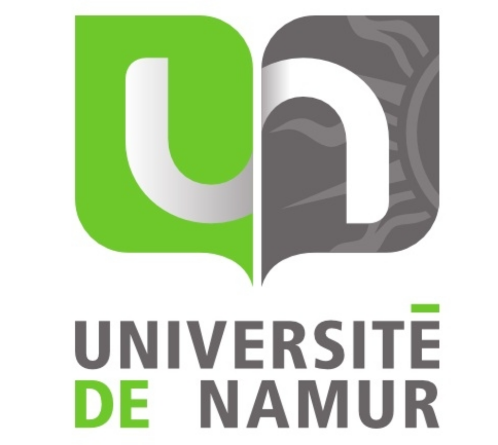

Serait-il pertinent, pour une Haute-Ecole telle que l’Henallux, de sponsoriser un serveur Tor ?
Projet Réseau | Cabaraux Guillaume - Cheramy Louis - Goossens Malo
Le Tor University Challenge
Une initiative de l'EFF (Electronic Frontier Foundation) pour encourager les universités à soutenir la liberté d'expression en ligne :
- Participation globale : Plus de 45 universités et institutions y participent déjà (dont l'UNamur).
- Hôtes idéaux : Les écoles disposent du haut débit, d'adresses IP libres et de compétences techniques.
- Opportunité pour l'Henallux : Contribuer aux libertés numériques mondiales au sein d'un réseau académique engagé.
Le relai Tor de L'Université de Namur

Projet concret mené par Florentin Rochet et Jules Dejaeghere de la Faculté d'Informatique :
- UNamurCS01 (Juillet 2024) : Passage public rapide (40 MB/s) pour relayer la connexion des utilisateurs de Tor.
- UNamurCS02 (Avril 2026) : Entrée "secrète" (2,99 MB/s) pour aider à contourner les blocages dans les pays censurés.
- Double objectif : Apporter une aide citoyenne et former les étudiants en sécurité sur de vrais serveurs opérationnels.
Aspect Légal
- Nœud de sortie (À éviter) : Risque légal et administratif élevé. L'IP de l'école serait visible lors d'éventuels abus ou activités illégales.
- Relais intermédiaire (Recommandé) : Risque juridique nul. L'école sert uniquement d'aiguillage chiffré sans rien pouvoir déchiffrer.
- Responsabilité légale : La responsabilité civile ou pénale de l'école ne peut pas être engagée pour le trafic qui y transite.
Aspect Éthique
- Liberté d'expression : Soutenir activement l'accès libre à l'information (journalistes, lanceurs d'alerte, citoyens censurés).
- Rôle académique : Un engagement fort pour une Haute-École, à l'image d'institutions comme le MIT ou l'UNamur.
- Utilité publique : Contribuer à la robustesse et à l'indépendance d'un réseau internet mondial solidaire.
Aspect Pédagogique
- Travaux pratiques réels : Sortir des simulations pour configurer et sécuriser un vrai serveur Linux connecté à Internet.
- Compétences réseau : Apprendre la gestion de la bande passante, l'isolation réseau et la cybersécurité appliquée.
- Responsabilisation : Sensibiliser les étudiants à la gestion de services critiques et aux enjeux de protection de la vie privée.
Aspect Technique
Prérequis simples pour installer un relais intermédiaire :
- Machine (Serveur / VM) : Serveur Linux (Debian ou Ubuntu) à maintenir à jour.
- Bande passante : Connexion stable, idéalement de 100+ Mbps.
- Processeur (CPU) : Puissance correcte sur un seul cœur (Tor n'utilise qu'un seul thread par instance).
- Adresse IP dédiée : IP publique dédiée pour éviter tout blocage éventuel sur le réseau principal de l'école.
Avantages et Inconvénients
Avantages
- Risque légal nul : Le relais ne fait que transmettre du trafic chiffré sans s'exposer directement.
- Apprentissage étudiant : TP concret de réseau, sécurité et administration Linux.
- Engagement solidaire : Aide active aux internautes censurés dans le monde.
- Maintenance minime : Le système fonctionne de manière autonome une fois installé.
Inconvénients
- Bande passante : Besoin d'une connexion internet stable (100+ Mbps).
- IP publique dédiée : Nécessaire pour préserver le réseau principal de l'école de tout blocage.
- Suivi technique : Surveillance et mises à jour de sécurité de temps en temps.
Réponse à la question de recherche
Serait-il pertinent pour une Haute-Ecole telle que l’Henallux de sponsoriser un serveur Tor ?
- La réponse est oui : C'est un projet à fort impact pédagogique et solidaire.
- Condition stricte : Choisir uniquement un relais intermédiaire (Middle Relay) et refuser le nœud de sortie.
- Bilan : Projet formateur en informatique, engagement sociétal fort et risque juridique nul.